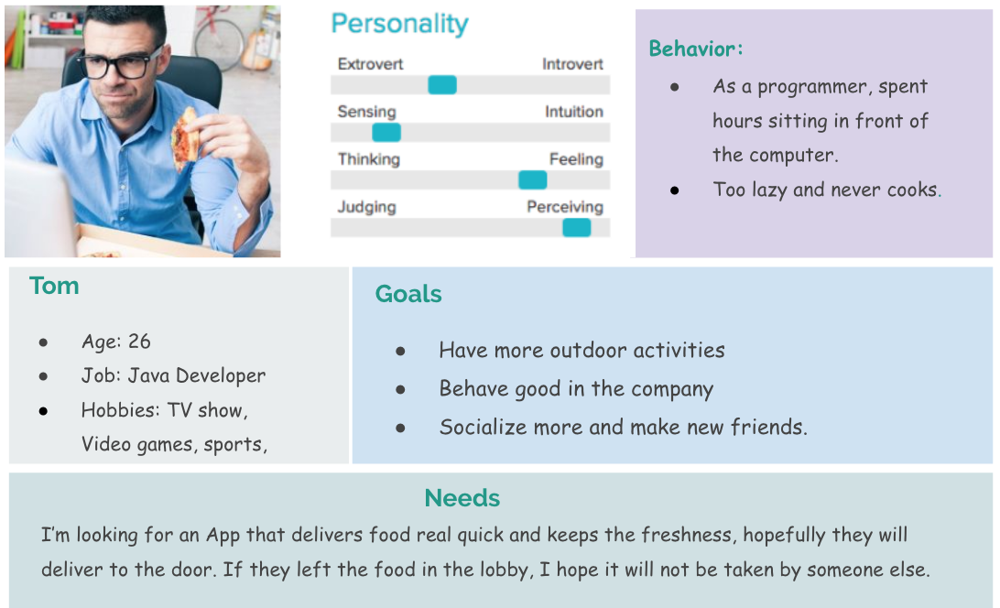
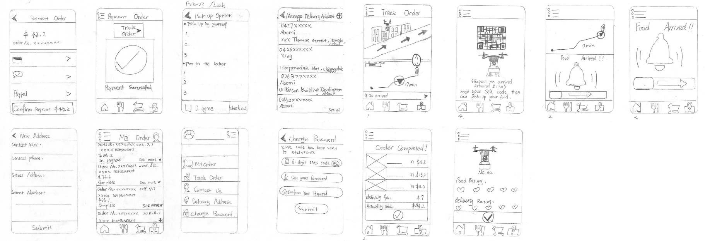
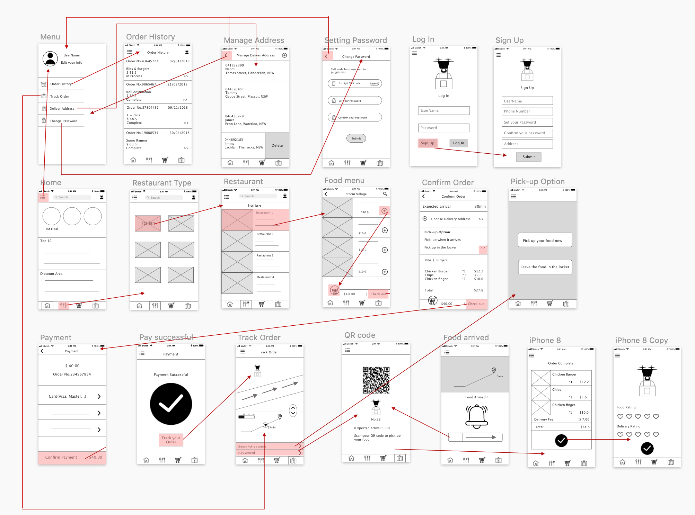
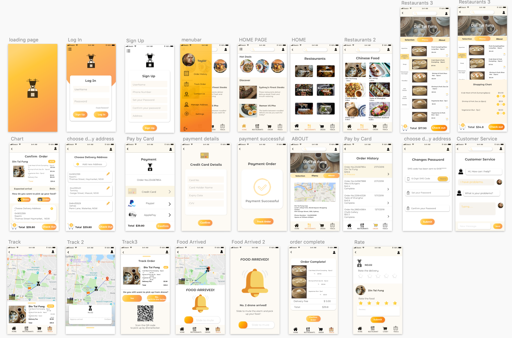
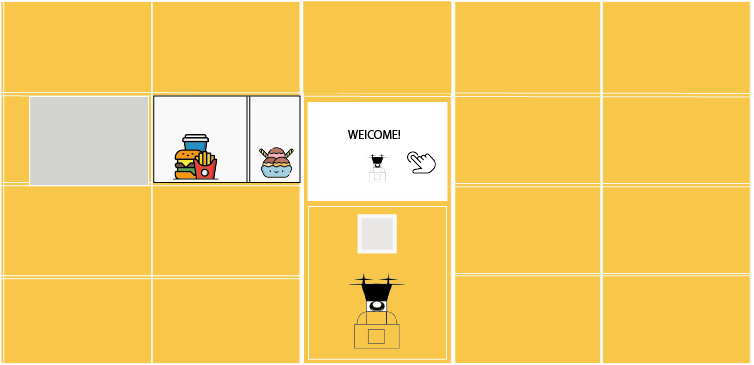

1.User centered research
2. Brainstorming solution
3.Early sketch
3.Test the feasible solution(how we get rid of the idea)
4. Wireframing(evolve idea)
5. Final testing(method: heuristic evaluation, usability testing)
6. interactive prototype(aethestic interface design)
User-centered research aims to gather the concerns regarding ordering and collecting food delivery from the drone, and explore the most insufficient process during the traditional food delivery. The research discovers the problem area, and I tried to get a deeper understanding of user needs and the expectation in the App.
interview
We start doing the interview with the target audience, mostly the customers who often order food using the app, and the people who work in the food industry or the food delivery app. I spoke to the restaurant owners, food delivery customers, the riders. After the interview, I recorded the interview and extract the problem area that respondents mentioned and encountered.
For example, I interviewed the restaurant owner who runs a Chinese restaurant, he mentioned that although Uber eats riders deliver food to customer’s door, they still received complaints about some drivers delivered the food the wrong door. This reflects the food delivery has the deficiency of the safety problem, which still needs to be facilitated.
questionnaire
To gather general concern and discover more about how users perceive the new technology of the delivery system, the questionnaire is sent to and filled by social media platform, it targets for the different audience with the different opinion.
Personas give us concrete understanding of user pain‐points and where we needed to attach our attention.Based on the data from the user research, we are creating a fictional character as a typical user to depict the imagined journey, which will guide our design decisions constantly throughout the whole design process.
The drone cannot recognise the customer and communicate with the customer like riders, which might result in delivering the food to the wrong people, and spending time waiting for the customer without knowing when the customer will arrive.
we are using approach like searching and gathering information from Google. After brainstorming the possible solution, we have defined three proposed solutions to the problem.
Possible solution
1. Entering security code on the drone screen
2. Drone scan the QR code to confirm the identity
3. Drone scan the QR code to confirm the identity
Challenge
Our team skipped about the technical issue in the drone delivery system, because the drone for food delivery is based on fully-mature technology. We provide the customer support based on general issues; However, I would have digged deeper in how users perceive if drone is being disturbed by the pedestrians and other circumstances, and provide customer support about what they can do.
I created different hand-sketched interface regarding each solution, as sketching allows us to visualize the solution in the interactive form. Then our team gets the potential users to test out the feasibility and ask for their opinion. Early sketches aim to explore different navigation patterns for the app's main screen. The benefit of creating the different sketch of each solution is that it utilizes the abstract thoughts in the materialization, and it gives user physical paper-based prototype and sees which solution works best to the user.
After testing out the early sketch with the potential users, most of the respondents prefer the idea of using QR code to collect the food from the drone over using the security code. Respondents suggest that it can be annoying if they enter the wrong security code on the drone screen. Moreover, some respondents suggest that approaching the fingers on the drone can be dangerous as the drone propeller might hurt the customer. However, putting the food in the locker is an acceptable way to the respondents, they like the idea because some users order the food before arriving home, and this provides the flexible time to pick up.
Therefore, we decided to combine the idea of collecting the food using QR code and putting the food in the locker, it gives users more options and it provides flexible time to collect the food. Instead of entering designated code to collect the food from the locker, locker scan the QR code on the phone, it makes the collecting process easier.
The wireframe is a digital way to place an element that constructs the app without considering the style. To achieve the user goals, our team designs the interface that enables the user to order food from the restaurant and choose the delivery method, also track the order in a convenient way, the userflow defines how wireframe works and the elements in it.
The basic layout and content are defined in the wireframe. The home page will be the food information which directs to the screen where the user can order food. The significant difference between our app and normal food delivery app is that it enables the user to track the order with accuracy and collect food with ease, it gives user options of how they would like to collect the food.
The user will be able to choose how they would like to pick up the food in the confirm order screen and also in the track order page, it gives user flexible choice and easy to arrange their time.
Usability test is conducted to gather insights from the potential user, i have interviewed the user and ask their opinion. The usability test aims to examine if user understands the flow and the detail of the interface.
Heuristic evaluation is the second approach in the final testing, i have asked the experts to examine the function and the interface, and then provide the heuristic checklist and ask them about which heuristic principle our app have violated.
As we attach importance to the user experience and the solution, we are not visual designers. Principle of perceived affordance is applied to provide guidance ((Norman,1999), consistent gradient color to all the clickable button, which user can perceive which button is clickable.. We are using Sketch to do the mockup and Invision Studio to connect the screens and the animation. The transitions in the app aims to provide consistent flow of the screen.
We took approach at security of food problem, which is the concern regarding future autonomous delivery system. Our aim is to do something that design will help with the rising technology, which serves the community and benefits the user. Testing with user and gather the feedback is the key during the design process, communicating with the potential user is challenging, However, helping the user understand our concept and digging deep about their thoughts is an approch to meeting their needs.
